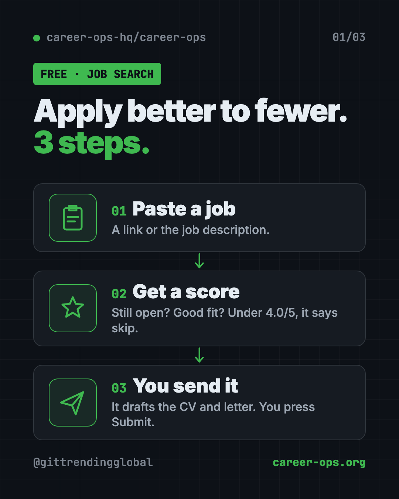
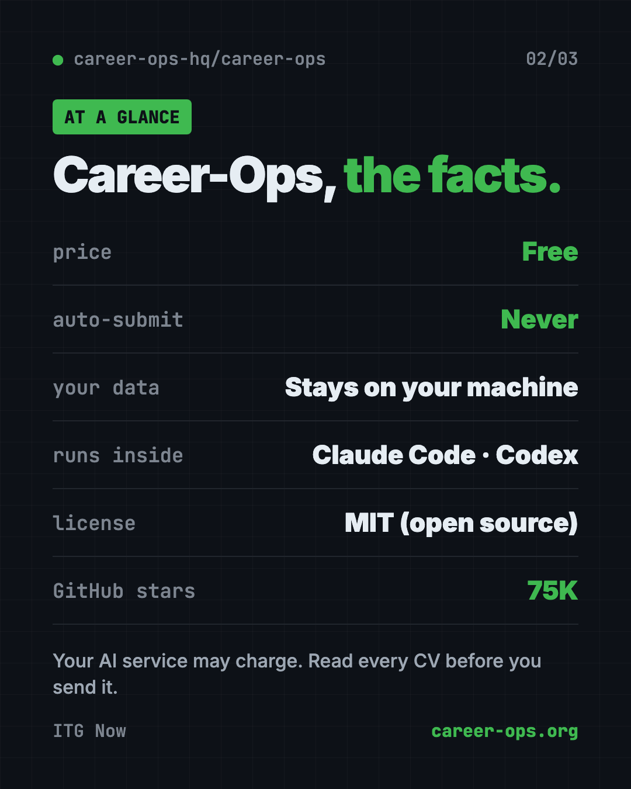
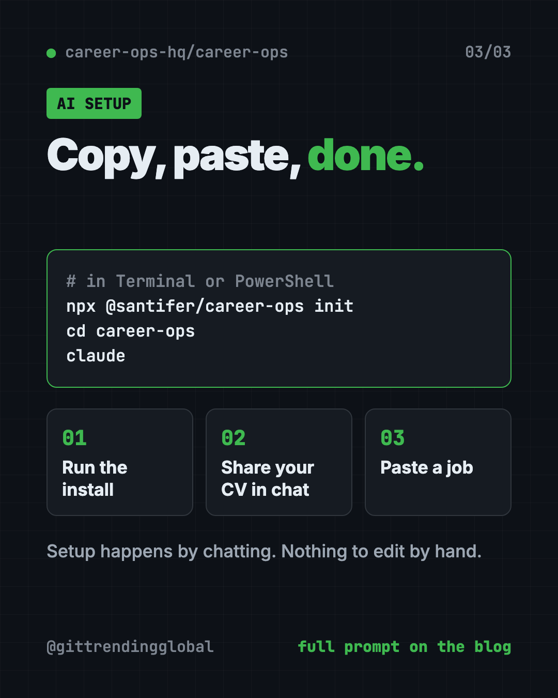
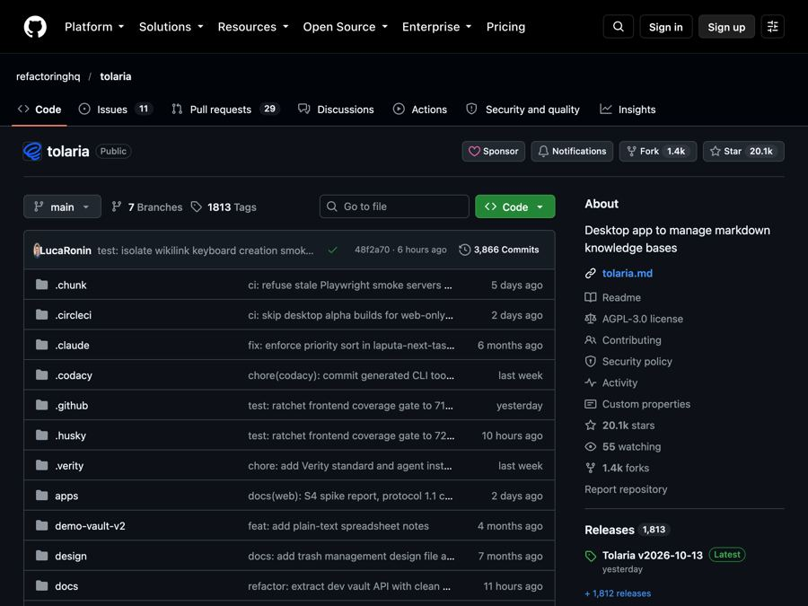

Career-Ops: Free AI Job Search Tool That Says Skip (2026)
Career-Ops is a free AI job search tool. It checks each job against your CV, tells you when to skip, and drafts tailored CVs and cover letters.
Career-Ops is a free AI job search tool that tells you which jobs are worth your evening. You paste a job, and it checks if the posting is still open, scores it against your real CV, and says "skip" when the fit is weak.
When a job is worth it, it drafts a tailored CV, a cover letter and your form answers. You read them, and you press Submit. This guide shows real ways to use it, how to install it with one command, and a prompt that lets an AI helper set it up.
Key takeaways
- Free and open source. MIT license. The README says it is "free for candidates, forever."
- It tells you when to skip. Below a 4.0 out of 5 fit, it advises not to apply. You can override it.
- You always press Submit. It never sends an application or an email for you.
- Your data stays with you. No tracking, no company server. Your CV only goes to the AI service you pick.
- Runs inside an AI helper. Claude Code, Codex, OpenCode and others.
What is Career-Ops?
Career-Ops is a job search helper that lives on your computer and runs inside an AI coding tool, like Claude Code. You talk to it in plain words.
Its maker built it for their own job search. In the README's words: "I was its first user. I got the job. Then I open-sourced it."
The idea is simple. Companies use AI to filter candidates. Career-Ops gives you an AI filter too, so you spend your time on the jobs that fit.
The README sums up its approach in six short lines. The first one is "Apply better to fewer."
On GitHub it has about 75K stars. Stars are like bookmarks, so a lot of job seekers and builders are watching it.

How to use Career-Ops (real examples)
Here is what a week with it could look like. Every feature comes from the README.
- Check tonight's job before you start. Paste the link. It confirms the posting is still live and scores it against your CV. A weak fit? You just got your evening back.
- Tailor your CV for one role. Type
/career-ops pdf. It builds a CV that reads well in ATS, the software many companies use to sort CVs. It uses only your real experience. - Write a cover letter. Type
/career-ops cover. It drafts one, shows it in chat, and waits for your OK. - Find the right person to message.
/career-ops contactofinds a hiring manager or recruiter and drafts a short LinkedIn note. It never sends it. - Prep for the interview.
/career-ops interview-prepmakes a company-specific prep doc. There are also practice sessions with feedback. - Learn from the "no"s. After a run of rejections,
/career-ops patternslooks for what keeps going wrong and names the gap.
💡 Tip: The first runs are rough, the README admits. Tell it about your CV, what you want and what you refuse. "Think of it as a recruiter's first week."
What Career-Ops will not do
This part matters, so the README spells it out:
- No auto-submit. It drafts every answer. You review and click Submit.
- No emails sent. Drafts only. There is no way for it to send mail.
- No phoning home. No tracking and no company server. Your CV goes only to the AI service you chose.
- No made-up facts. It rewords your CV but must "never fabricate it." A check stops a PDF with numbers that aren't in your own CV. Still, read every CV before you send it.
⚠️ Heads up: The fabrication check can't catch every rewording, per the README. Always read the final CV yourself.
Is Career-Ops free?
Yes. The tool is free and MIT licensed. Sponsors help fund it, and the README says sponsors never appear in evaluations or rankings.
The AI service behind it may cost money, depending on which one you use. The README links guides for running it on a budget. One explains how to run it at zero cost on Antigravity CLI's free tier.
Career-Ops at a glance
| Price | Free (your AI service may charge) |
| Works offline | No, the AI helper needs the internet |
| Platforms | Mac, Windows, Linux |
| License | MIT (open source) |
| Runs inside | Claude Code, Codex, OpenCode, Qwen, Antigravity, Grok CLIs |
| Sends anything for you? | No. Drafts only |
| Best for | Job seekers who want fewer, better applications |

How to install Career-Ops
You need Node.js, a free program many apps run on. If you already use Claude Code, Codex or a similar AI tool in your terminal, you have it.
You also need an AI coding tool to talk to, like Claude Code or Codex.
Open Terminal (Mac or Linux) or PowerShell (Windows). Copy and paste this:
npx @santifer/career-ops init
This downloads the latest version into a new career-ops folder. Then move into that folder and open your AI tool. Copy and paste this:
cd career-ops
claude
Use codex, opencode or another AI tool instead of claude if that's what you have.
On first launch, Career-Ops walks you through setup in chat. It asks for your CV, your profile and the roles you want. The README says there is "nothing to edit by hand."
Then paste a job link or job description. It runs the full check on its own.
💡 Tip: Using Codex? The README says slash commands like
/career-opsmay not work there. Just ask in plain words, like "Run the career-ops scan mode."
Let Claude or Codex set it up for you
Claude Code and OpenAI Codex are AI helpers that can run setup steps on your computer. You paste a request, it does the work, and you approve each step. With Career-Ops, the same helper then runs your job search.
Copy and paste this:
Please help me set up Career-Ops from github.com/career-ops-hq/career-ops.
1. Check that I have Node.js. If not, explain how to install it.
2. Run: npx @santifer/career-ops init
3. Explain each step before you run it.
4. Walk me through the first-launch setup: my CV, what I want and what I refuse.
5. Then evaluate this job for me and tell me if I should apply: [paste job link]
Then try asking:
Run /career-ops cover for the last job you evaluated. Keep it short and only use facts from my CV.
Run /career-ops interview-prep for my interview next week and make me a time-blocked plan.
Show me /career-ops tracker and tell me which applications need a follow-up.

What are Career-Ops' limits?
- You need an AI coding tool. It runs inside one, not as a website.
- Some setup. You use a terminal once. After that it's mostly chat.
- It needs to learn you. Early results improve as you tell it more.
- It doesn't replace your judgment. It recommends. You decide.
- Many built-in company lists lean tech. The scanner comes with 100+ companies set up, like Anthropic, OpenAI and ElevenLabs. You can add your own.
Our take
Career-Ops flips the usual "apply everywhere" advice. It helps you skip weak fits and put real effort into the good ones. And it never sends anything without you.
What we like:
- Honest "skip this" advice, with your right to override.
- Drafts CVs, cover letters and messages, but you hit Send.
- Your data stays on your machine.
- Interview prep, follow-ups and offer help in one place.
- Setup by chat, with nothing to edit by hand.
What to watch for:
- Needs an AI coding tool and a little terminal use.
- The AI service may cost money.
- Read every CV before sending. Checks can't catch everything.
Want a simpler option? Read our guide to AI Job Search, a free kit that tailors your CV for every job. New to AI helpers? Try Handy, free offline voice typing, to talk through your first drafts. Career-Ops also made our April 2026 Top 5.
FAQ
Is Career-Ops a free AI job search tool?
Yes. Career-Ops is free and open source under the MIT license. The README says it is free for candidates, forever. Your AI service may charge separately.
Does Career-Ops apply to jobs for me?
No. It drafts your answers and CV, but you always review and click Submit yourself. It never sends emails either.
Is my CV private with Career-Ops?
Your files stay on your computer. The README says your CV only goes to the AI service you chose, with no tracking and no company server.
Will Career-Ops make up things on my CV?
It is built not to. It rewords your real experience, and a check blocks PDFs with numbers not found in your CV. You should still read every CV before sending.
Which AI tools work with Career-Ops?
The README lists Claude Code, Codex, OpenCode, Qwen, Antigravity CLI and Grok Build CLI. In Codex, you ask in plain words instead of using slash commands.
Can Career-Ops write cover letters?
Yes. Type /career-ops cover. It drafts the letter in chat, waits for your approval, then makes a PDF.
Get Career-Ops: github.com/career-ops-hq/career-ops
Follow @gittrendingglobal on Instagram for one free, useful tool every day.
📲 Watch it on Instagram in under a minute
Keep reading

PureMac: Free CleanMyMac Alternative, No Subscription
PureMac is a free CleanMyMac alternative. It clears junk, fully uninstalls apps and finds duplicates, with no subscription, no tracking and no scare tactics.

Strata: Run Big Local AI on a Gaming PC, Free
Strata is a free installer that runs big, private local AI on a gaming PC. It sets up a large Qwen model, so your chats never leave your computer.

Tolaria: A Free Offline Notes App You Fully Own (2026)
Tolaria is a free offline notes app for Mac, Windows and Linux. Your notes are plain files you own, with full version history and no account.